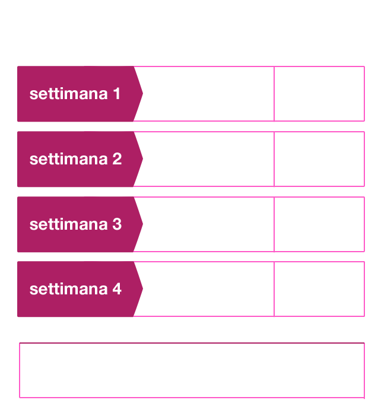
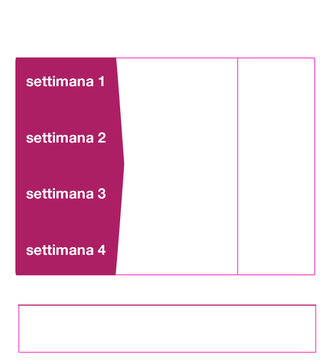

Dal mese di maggio, Tre modifica alcune opzioni, offrendo nuovi vantaggi. Più semplicità, flessibilità, e controllo sulla spesa, grazie alla nuova modalità di rinnovo delle opzioni: il traffico incluso nella tua offerta non sarà più vincolato a scadenze settimanali, ma sarà utilizzabile all’interno delle 4 settimane. Potrai utilizzare in modo più flessibile, su 4 settimane, il tuo traffico incluso e sosterrai costi extra solo al consumo totale di Minuti, SMS e GB previsti dalla tua opzione.
Avrai più controllo sulla tua spesa perché l’addebito e il rinnovo dell’opzione avverranno nello stesso momento, perciò ricordati che al rinnovo dell’offerta dovrai avere abbastanza credito nel tuo smartphone. In caso di credito insufficiente, una ricarica ti permetterà di riattivare immediatamente l’opzione e di continuare a navigare e utilizzare il telefono.

UN ESEMPIO
Oggi un cliente con opzione ALL-IN 400, 400 minuti, 400 SMS e 4 GIGA per 4 settimane, ha a disposizione 100 minuti, 100 SMS e 1 GIGA da utilizzare in 7 giorni.
Può capitare che in una settimana utilizzi metà del traffico dati e nelle altre più della sua disponibilità, per esempio 500 MEGA di extra soglia sostenendo i relativi costi aggiuntivi.
Con la modifica, grazie alla disponibilità di 4 GIGA su 28 giorni, potrà utilizzare la stessa quantità di traffico senza addebiti per traffico in extrasoglia.
Può capitare che in una settimana utilizzi metà del traffico dati e nelle altre più della sua disponibilità, per esempio 500 MEGA di extra soglia sostenendo i relativi costi aggiuntivi.
Con la modifica, grazie alla disponibilità di 4 GIGA su 28 giorni, potrà utilizzare la stessa quantità di traffico senza addebiti per traffico in extrasoglia.
LA TUA OFFERTA ALL-IN
PRIMA

LA TUA OFFERTA ALL-IN
DOPO

Riceverai un SMS sulle novità appena disponibili, resta sempre aggiornato su Tre.it.
-
Note Legali
Fanno eccezione le opzioni con soglie giornaliere di traffico incluso; in questo caso la fruizione resta invariata mentre il canone sarà addebitato ogni 28gg. In caso di superamento della soglia voce e SMS verrà applicata rispettivamente la tariffa di 29 cent/minuto senza scatto alla risposta per le chiamate e 29 cent/SMS.